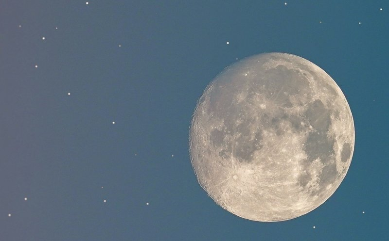
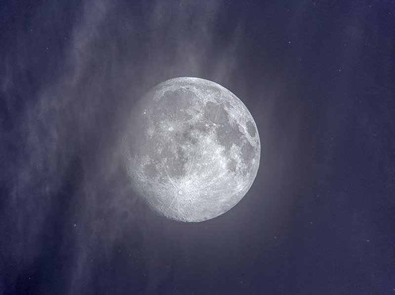
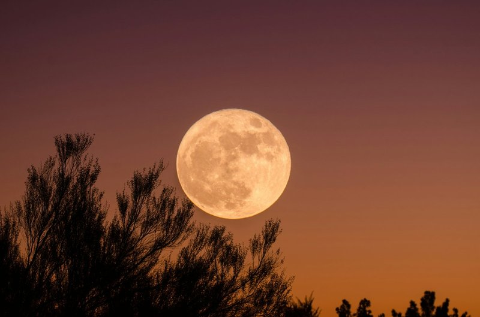
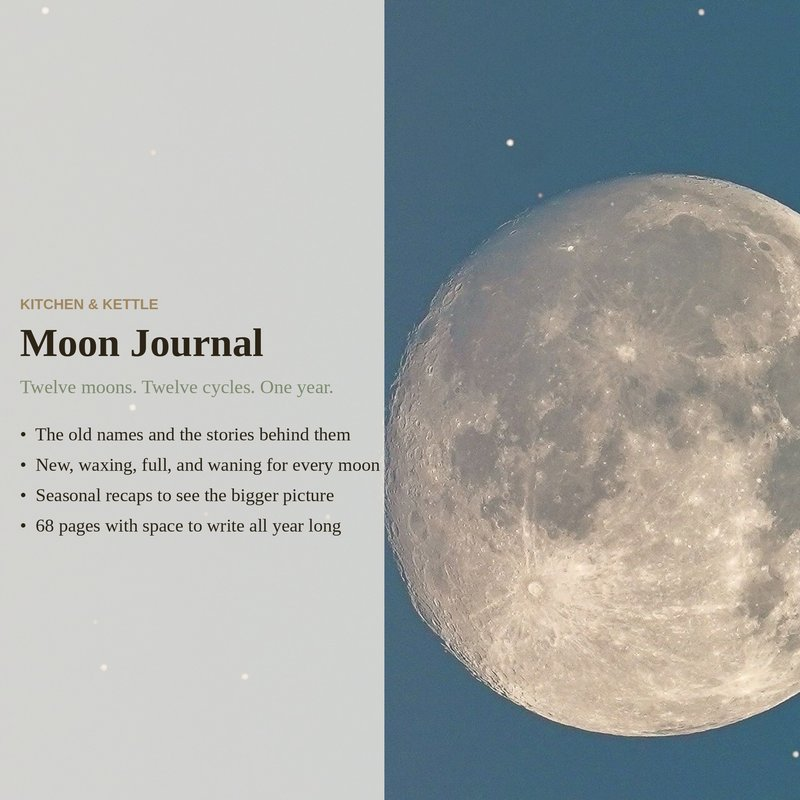

Before calendars hung on kitchen walls, people tracked time by the moon. Each full moon had a name, and each name was a memo — a reminder of what the world was doing that month. The January moon was the Wolf Moon, because wolves howled at the edge of the village in the hunger of deep winter. The June moon was the Strawberry Moon, because the wild strawberries were ripe. These names weren't poetry. They were information.

Most of the names we still use come from the Algonquin people of the northeastern United States. Colonial farmers adopted them because they made sense — the names described things they could see and feel. The Harvest Moon in September meant extra light for bringing in crops after sunset. The Beaver Moon in November meant it was time to set traps before the swamps froze. Every name was tied to something real, something you could act on.
A few of the names, and what they meant
Wolf Moon (January). Wolves howled more in January — not at the moon, but to locate pack members in the leanest month of winter. The name stuck because people heard them. If you've ever heard a wolf howl on a still January night, you understand the name immediately.

Worm Moon (March). As the ground thawed, earthworm casts appeared in the softening soil. Robins followed. The Worm Moon was the first real sign that winter was losing its grip — not a date on a calendar, but something you could see with your own eyes on a walk through the woods.
Strawberry Moon (June). Wild strawberries ripen in June across most of North America. The Strawberry Moon was a short window — maybe two or three weeks — and the name was a reminder not to miss it. Some Algonquin groups called it the Rose Moon instead, for the wild roses blooming at the same time. Either way, the name was tied to what was right in front of you.
Harvest Moon (September). This is the full moon closest to the autumn equinox. It rises earlier than other full moons — only about twenty minutes later each night instead of the usual fifty — which meant several nights in a row of bright moonlight just after sunset, right when farmers needed it most. Before combine headlights, the Harvest Moon was extra working light, and it came at exactly the right time.

Hunter's Moon (October). After the harvest, the fields were bare and the deer had fattened on grain. The Hunter's Moon rose early and bright, giving hunters light to track game through the cleared fields. It was a practical name for a practical time — the last chance to put away meat before winter.
Beaver Moon (November). Beavers are busy in November, building up their lodges before freeze-up. For trappers, this was the signal — set your traps now, while the pelts are thick and the swamps are still open. The name wasn't sentimental. It was a to-do list.
Why the names still matter
You don't need to be a farmer or a trapper for the old moon names to mean something. They're a reminder that time isn't just a grid of numbered days — it's seasonal. Cyclical. Tied to what's actually happening outside your window. Paying attention to the moon is paying attention to the world, once a month, whether you live on a homestead or in an apartment. The Strawberry Moon comes every June whether you're picking strawberries or not.
The Moon Journal walks through all twelve full moons — Wolf Moon through Cold Moon — with the folk meaning behind each one and a prompt to help you check in with yourself once a month. It includes cycle pages for waxing, waning, new, and full moon reflection, seasonal moon notes, and open notes pages. 68 pages total.
Moon Journal on Etsy →